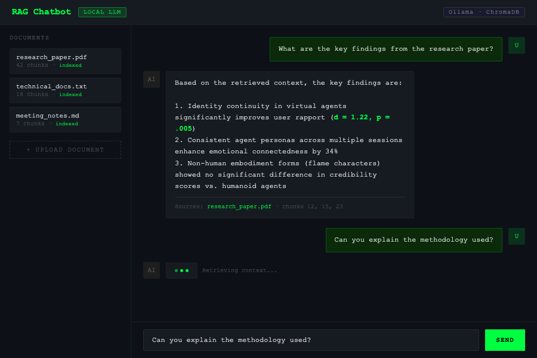
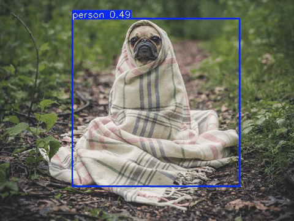
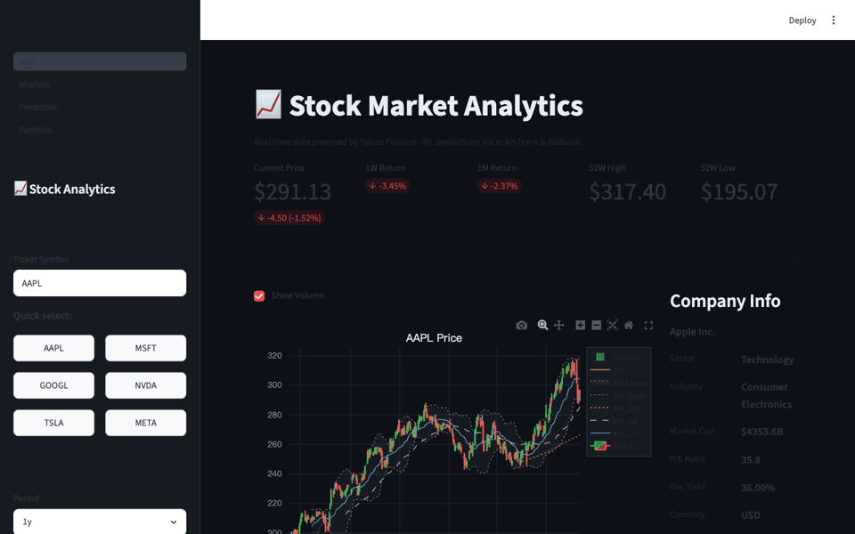
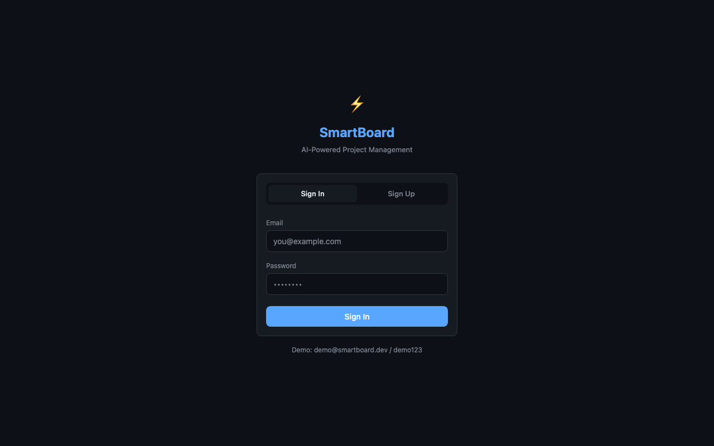
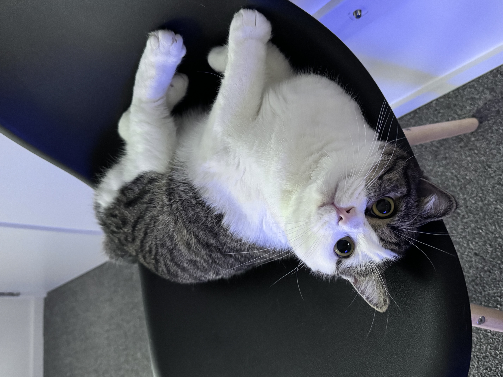
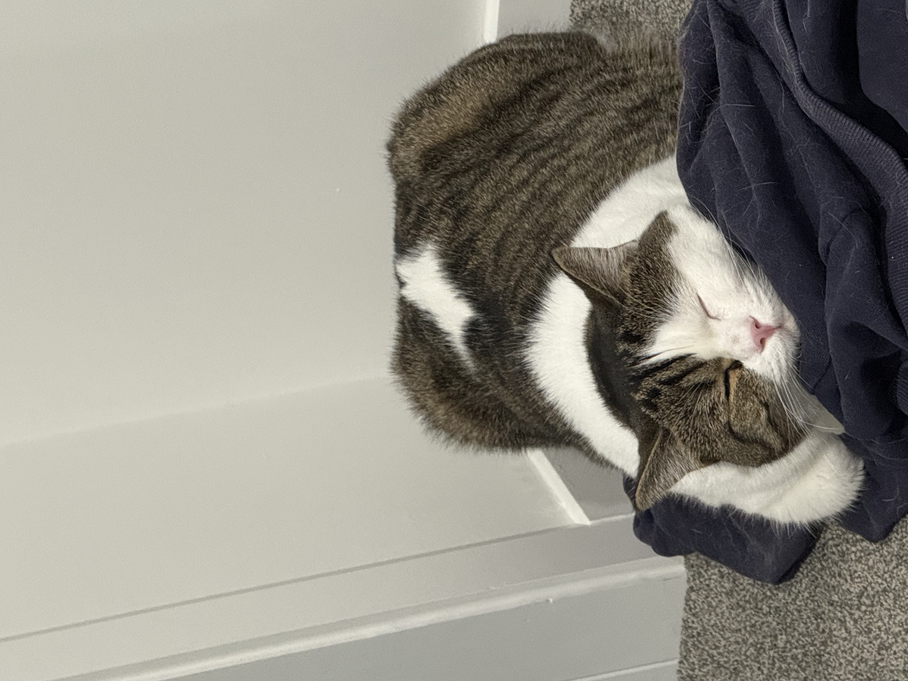
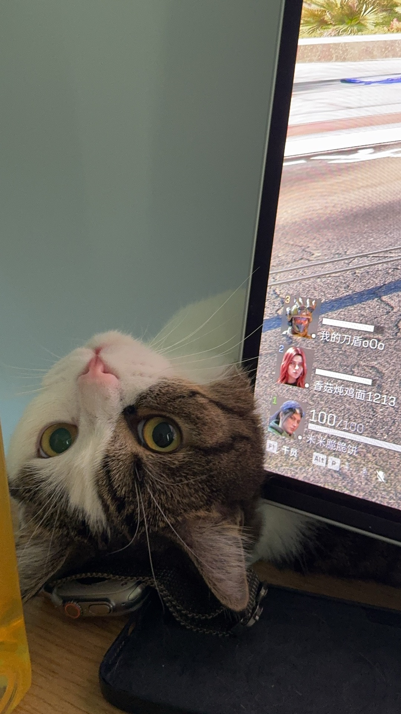
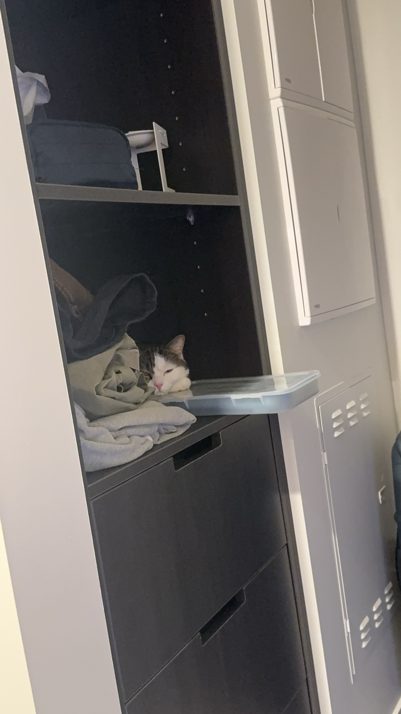
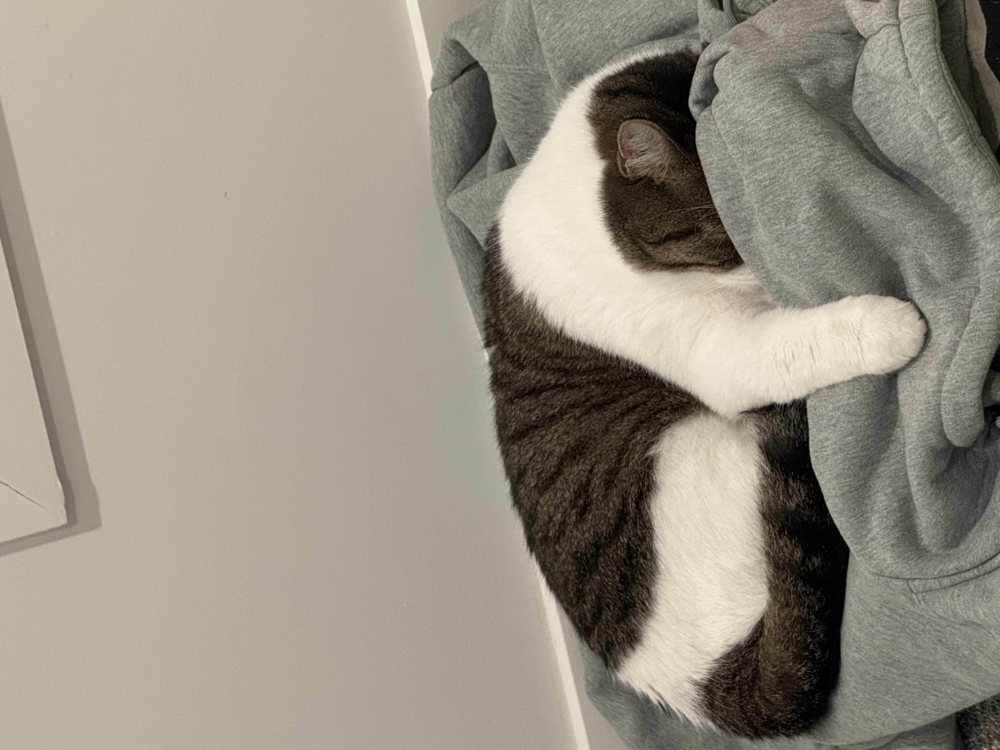

VR Developer · AI Systems Engineer · ML Research
Master of Engineering @ University of Canterbury | Auckland, NZ
C# · Unity · Python · LLM · VR
Master's researcher investigating how identity continuity in virtual AI agents affects rapport, emotional connectedness, and credibility in VR environments.
My thesis — "One Soul, Many Forms" — demonstrated that agents maintaining identity continuity across multiple VR games produced significantly stronger user relationships (d = 1.22, p = .005) than discontinuous agents.
I combine Computer Science fundamentals with hands-on VR development, multi-modal AI integration, and ML engineering — building systems that bridge the gap between intelligent agents and human experience.
Thesis: Intelligent VR Games with Multi-Modal AI Agents · Personal Projects
Abstract animated flame character with facial features acts as an adaptive AI guide in a multi-step puzzle escape room. The agent integrates LLM + TTS + STT for natural voice interaction and provides context-aware hints based on player progress.
Embodied alien agent "Oppy" from Meta's open-source sample, redesigned as a collaborative partner in a UFO shooting game. Introduces task dependency design — the agent retrieves invisible ammunition that the player cannot obtain alone, enforcing genuine collaboration.
An invisible, voice-only presence guides players through a series of sequential tasks in a virtual home environment. Built on Meta's Voice SDK, the agent uses gesture + voice combinations — eliminating visual distraction to isolate the effect of voice identity continuity on user trust.
A 5-agent automated pipeline built entirely in Python — scrapes Auckland job listings across Seek, Indeed, and company career pages, scores each role for fit using an LLM, writes tailored cover letters, QC-reviews and rewrites them, then submits applications directly via Playwright or generates a Gmail draft. No API key required — powered by Claude Code CLI as the AI backbone.
SOFTWARE ENGINEERING — PERSONAL PROJECTS

Production-ready Retrieval-Augmented Generation system — upload PDF, TXT, or Markdown, ask questions, get streamed answers from a local Ollama LLM. No cloud API keys required; fully self-hosted with ChromaDB vector storage.

Real-time object detection API serving YOLOv8n inference over REST and WebSocket. Upload an image for instant bounding boxes, or stream a live camera feed for continuous detection at low latency.

Interactive stock analytics platform with ML price prediction and portfolio optimization. Pulls real-time data via Yahoo Finance, computes technical indicators, and trains four ML models with time-series cross-validation.

Full-stack project management platform with a dark-theme Kanban board, real-time WebSocket collaboration, and AI task generation via Ollama streaming SSE. React 18 frontend + FastAPI backend + PostgreSQL.
Every dev setup has a lead engineer no one asked for. Mine is ROME — a male cat of unknown methodology but unquestionable authority, embedded in this workspace since day one.
He does not write code. He does not review PRs. What he does is watch — with the patient, unblinking intensity of a senior engineer who has seen every bug you are about to make and has decided, professionally, that it is not his problem.
When not stationed behind the monitor, he relocates to covert elevated positions throughout the apartment — windowsills, wardrobe tops, the one shelf I told myself I'd organize — maintaining full-spectrum visual coverage of all development activity. He has never filed a single report.





Open to opportunities in game development, VR/XR engineering, and AI systems.